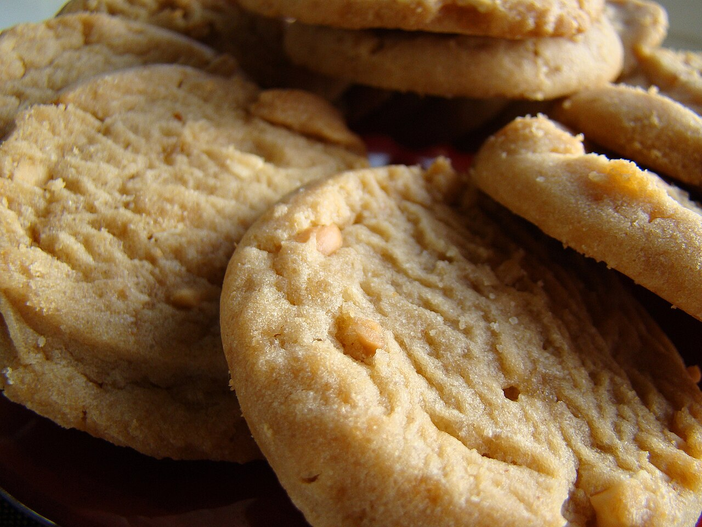

4-Ingredient Peanut Butter Cookies

Need a quick dessert?
With just three ingredients, these simple peanut butter cookies will delight kids and grown-ups alike – and they're gluten-free, too.
Ingredients
Here are the ingredients you'll need.
- 200g peanut butter (crunchy or smooth)
- 175g golden caster sugar
- 1/4 tsp fine table salt
- 1 large egg
Steps
- Heat oven to 180C/160C fan/gas 4 and line 2 large baking trays with baking parchment.
- Measure the peanut butter and sugar into a bowl. Add ¼ tsp fine table salt and mix well with a wooden spoon. Add the egg and mix again until the mixture forms a dough.
- Break off cherry tomato sized chunks of dough and place, well spaced apart, on the trays. Press the cookies down with the back of a fork to squash them a little. The cookies can now be frozen for 2 months, cook from frozen adding an extra min or 2 to the cooking time.
- Bake for 12 mins, until golden around the edges and paler in the centre. Cool on the trays for 10 mins, then transfer to a wire rack and cool completely. Store in a cookie jar for up to 3 days.
Nutrition Facts
128 kcal, 7g fat, 2g saturates, 12g carbs, 12g sugars, 0.8g fibre, 4g protein, 0.2g salt
Home